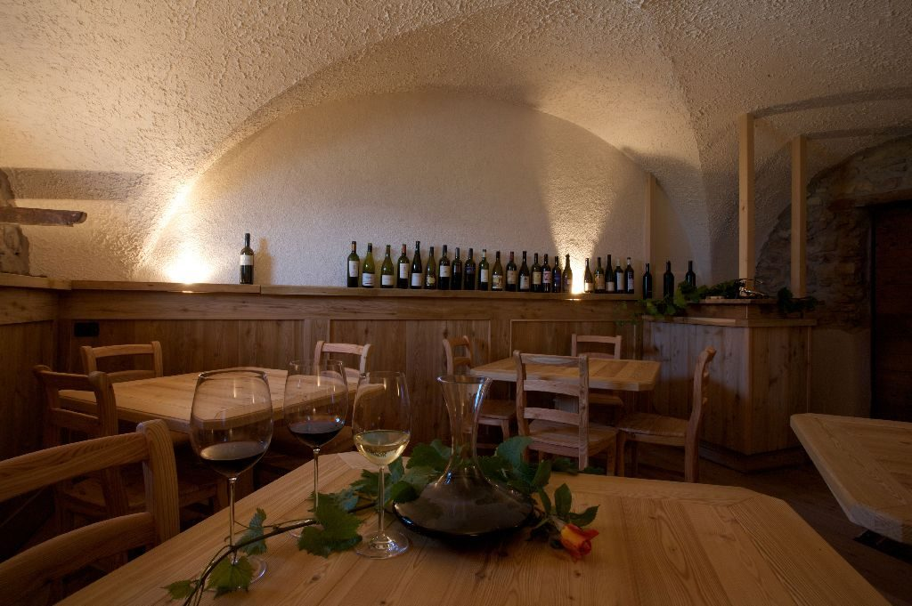

Bed & break wine
L'agriturismo è sulle pendici del Monte Corona, a due passi da Trento, oltre il piccolo borgo di Sorni che svela il panorama sulla Piana Rotaliana. Per chi non si accontenta di dormire, ma vuole volare con la fantasia tra i vigneti.
- 5 stanze a temaCurate in ogni dettaglio, con elementi di design e dedicate al mondo agricolo.
- La stua delle colazioniPer rispettare il rito più antico delle famiglie.
- Il bruch in campagnaPer tornare a godersi il tempo assieme, come una volta.
- La Terra del Gés, winery & shopNon una semplice enoteca: un posto per assaporare con calma il buon vino.
Al maso, sopra Lavis
Maso Panizza di Sopra, Strada del Vino 22
loc. Sorni di Lavis (TN)
cell. 331 967 2482 · info@cobelli.it